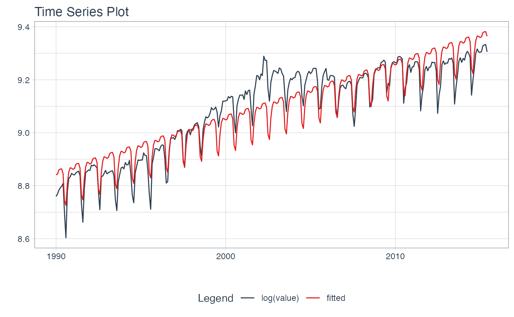

Visualize a Time Series Linear Regression Formula
Source:R/plot-time_series_regression.R
plot_time_series_regression.RdA wrapper for stats::lm() that overlays a
linear regression fitted model over a time series, which can help
show the effect of feature engineering
plot_time_series_regression( .data, .date_var, .formula, .show_summary = FALSE, ... )
Arguments
| .data | A |
|---|---|
| .date_var | A column containing either date or date-time values |
| .formula | A linear regression formula. The left-hand side of the formula is used
as the y-axis value. The right-hand side of the formula is used to develop the linear regression model.
See |
| .show_summary | If |
| ... | Additional arguments passed to |
Value
A static ggplot2 plot or an interactive plotly plot
Details
plot_time_series_regression() is a scalable function that works with both ungrouped and grouped
data.frame objects (and tibbles!).
Time Series Formula
The .formula uses stats::lm() to apply a linear regression, which is used to visualize
the effect of feature engineering on a time series.
The left-hand side of the formula is used as the y-axis value.
The right-hand side of the formula is used to develop the linear regression model.
Interactive by Default
plot_time_series_regression() is built for exploration using:
Interactive Plots:
plotly(default) - Great for exploring!Static Plots:
ggplot2(set.interactive = FALSE) - Great for PDF Reports
By default, an interactive plotly visualization is returned.
Scalable with Facets & Dplyr Groups
plot_time_series_regression() returns multiple time series plots using ggplot2 facets:
group_by()- If groups are detected, multiple facets are returnedplot_time_series_regression(.facet_vars)- You can manually supply facets as well.
Examples
library(dplyr) library(lubridate) # ---- SINGLE SERIES ---- m4_monthly %>% filter(id == "M750") %>% plot_time_series_regression( .date_var = date, .formula = log(value) ~ as.numeric(date) + month(date, label = TRUE), .show_summary = TRUE, .facet_ncol = 2, .interactive = FALSE )#> #> Call: #> stats::lm(formula = .formula, data = .data) #> #> Residuals: #> Min 1Q Median 3Q Max #> -0.12770 -0.05159 -0.01753 0.05142 0.17828 #> #> Coefficients: #> Estimate Std. Error t value Pr(>|t|) #> (Intercept) 8.407e+00 1.651e-02 509.199 < 2e-16 *** #> as.numeric(date) 5.679e-05 1.348e-06 42.118 < 2e-16 *** #> month(date, label = TRUE).L -3.584e-02 1.256e-02 -2.854 0.004625 ** #> month(date, label = TRUE).Q 7.509e-02 1.256e-02 5.979 6.51e-09 *** #> month(date, label = TRUE).C 7.879e-02 1.256e-02 6.273 1.27e-09 *** #> month(date, label = TRUE)^4 -4.931e-02 1.256e-02 -3.926 0.000108 *** #> month(date, label = TRUE)^5 -7.964e-02 1.256e-02 -6.341 8.61e-10 *** #> month(date, label = TRUE)^6 1.215e-02 1.256e-02 0.967 0.334270 #> month(date, label = TRUE)^7 5.196e-02 1.256e-02 4.137 4.60e-05 *** #> month(date, label = TRUE)^8 1.200e-02 1.256e-02 0.955 0.340143 #> [ reached getOption("max.print") -- omitted 3 rows ] #> --- #> Signif. codes: 0 ‘***’ 0.001 ‘**’ 0.01 ‘*’ 0.05 ‘.’ 0.1 ‘ ’ 1 #> #> Residual standard error: 0.06341 on 293 degrees of freedom #> Multiple R-squared: 0.8695, Adjusted R-squared: 0.8641 #> F-statistic: 162.6 on 12 and 293 DF, p-value: < 2.2e-16 #># ---- GROUPED SERIES ---- m4_monthly %>% group_by(id) %>% plot_time_series_regression( .date_var = date, .formula = log(value) ~ as.numeric(date) + month(date, label = TRUE), .facet_ncol = 2, .interactive = FALSE )